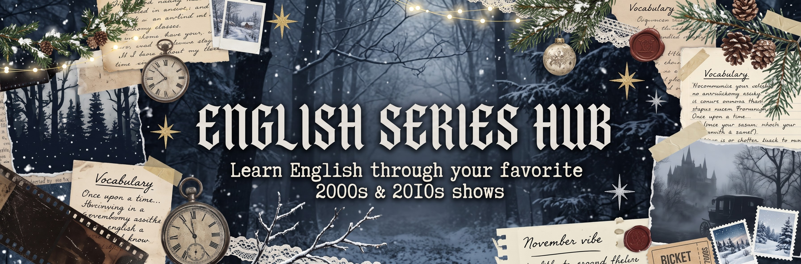

Твой продвинутый тренажер уровня B1 по любимым сериалам и дорамам
Прокачивай живой английский уровня B1 на реальных диалогах, интригах и драмах. Слушай произношение, отмечай выученные слова, проходи викторины и разбирай грамматику любимых героев.
Нажми на карточку проекта, чтобы сразу перейти к его словам в словаре:
The Vampire Diaries — мистика, вечная любовь, проклятия и эмоциональные диалоги Мистик Фоллс.
Открыть лексику (16) →Desperate Housewives — ирония, скелеты в шкафу, сплетни и безупречный разговорный английский Вистерия Лейн.
Открыть лексику (8) →Supernatural — дорожный сленг братьев Винчестеров, охота на демонов, сарказм и американские идиомы.
Открыть лексику (8) →The Penthouse — лексика высшего общества, амбиции, месть, судебные интриги и борьба за власть во дворце Гера.
Открыть лексику (8) →Нажимай 🔊 для озвучки слова на английском и ⭐, чтобы отметить слово как выученное.
Проверь знание слов, идиом и грамматики из всех 4 сериалов. После каждого ответа появится подробный разбор!
Выбери проект, чтобы разобрать культовые цитаты, грамматику уровня B1 и живой разговорный сленг:
Переключай атмосферу сайта под свое настроение:
Отмечай выполненные этапы обучения (всё автоматически сохраняется на устройстве):
Если хочешь обнулить выученные слова, результаты тестов и чек-лист: